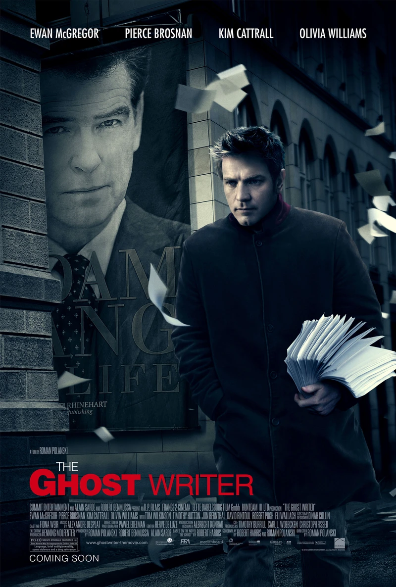

🍿 La cloroteca |
⤶ Volver al inicio |

Advertencia de spoilers
Muchas de la películas con misterios a resolver tienen el problema de ser muy obvias, y así pierden el interés del espectador. Y aunque a mitad de la película dan un pequeño guiño del final, es tan intrascendente en ese momento que hace pensar: «como no me di cuenta antes». Y lo mejor de esta film es su final, ya que el secreto siempre estuvo a la vista, e igual sorprende (al menos a mí).
Uno de los problema que vi es que nunca simpatizo con el protagonista, ya que ni él tiene idea de porqué sigue las pistas, ya que le van cayendo como anillo al dedo. Además, aunque sorprende, la escena final arruina todo lo que logró, y deja impunes a los culpables.
Pero no todo es malo, su tinte comédico relaja al espectador, además que la escena donde muere el ex primer ministro choca y revuelve todas las posibles teorias que hayamos hecho.